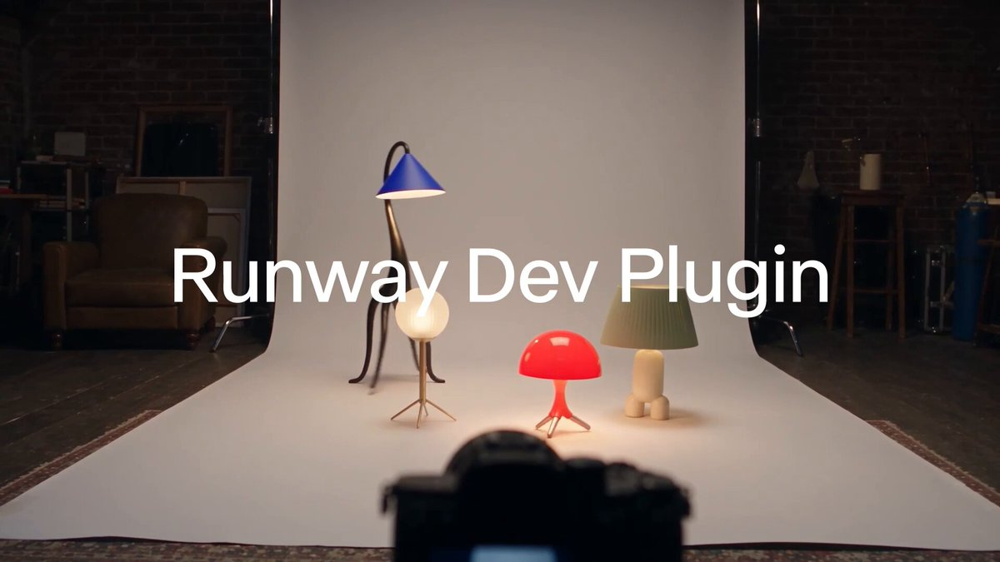
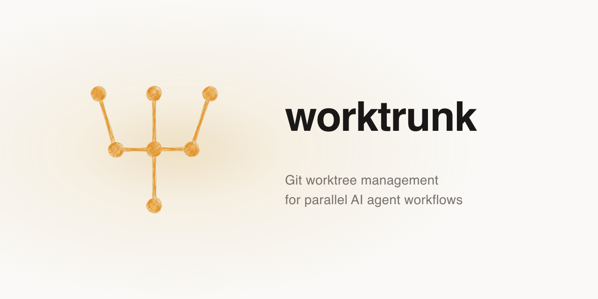
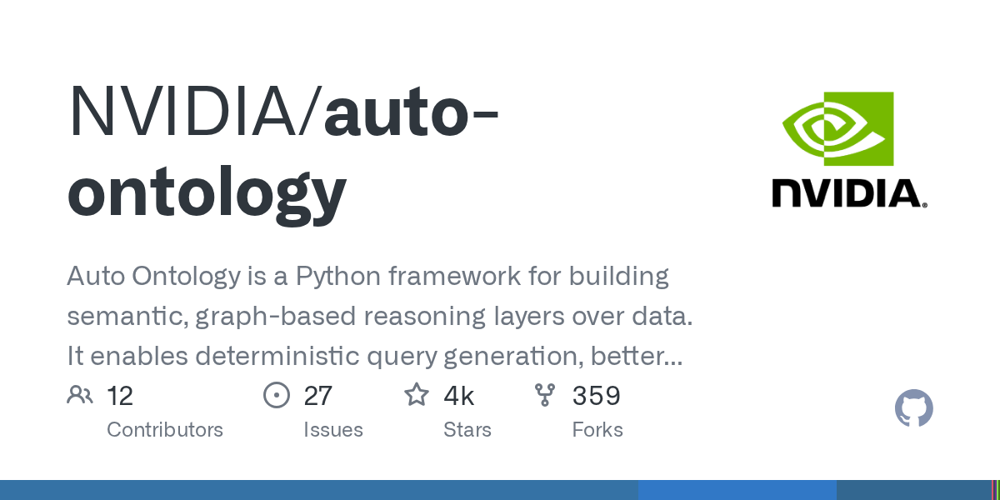
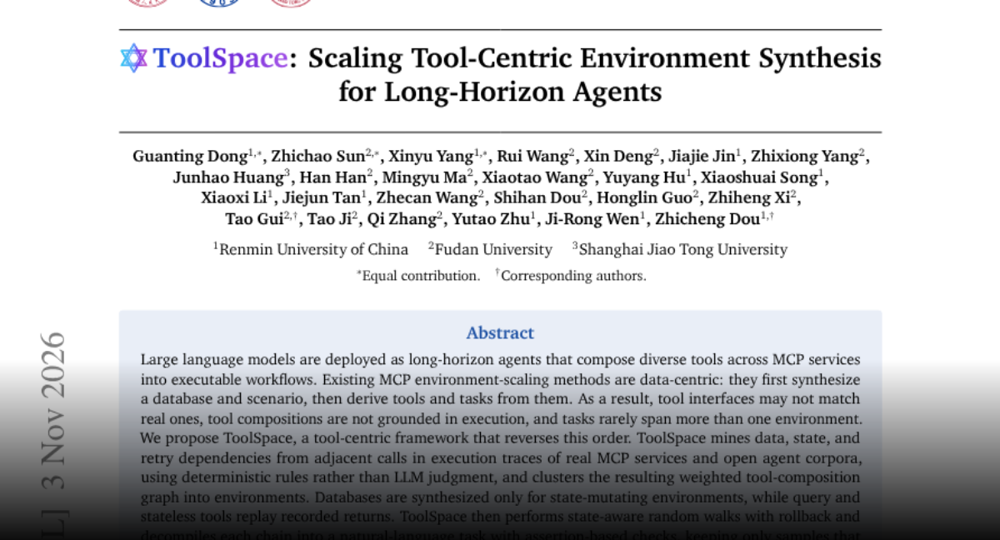
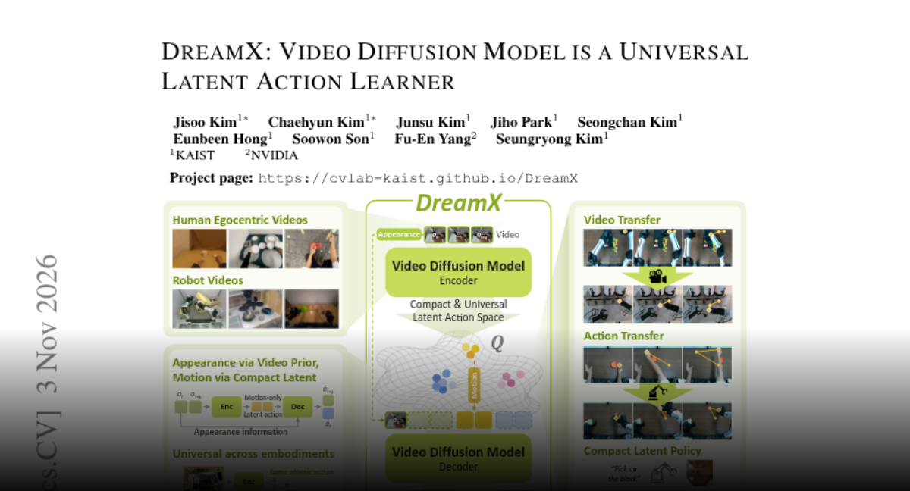
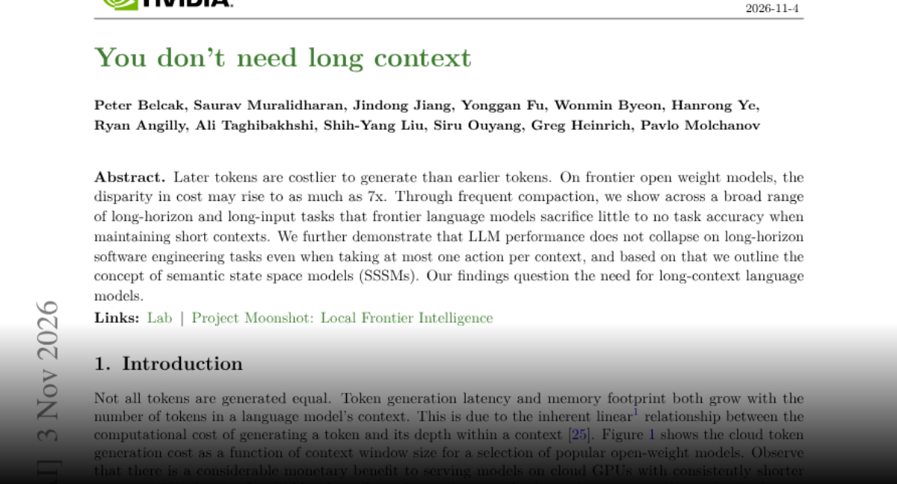
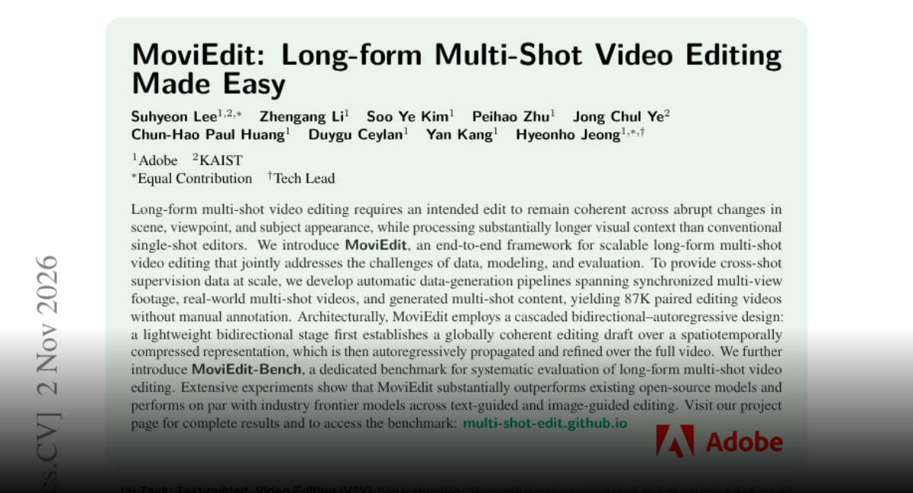
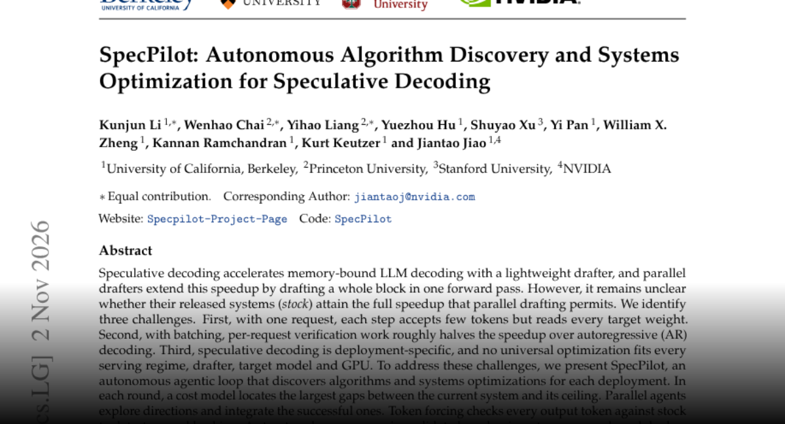

01
OpenAI 计划收购 Pierre Computer Company
OpenAI 宣布计划收购 Pierre Computer Company，以扩展 Codex 在代码构建、理解和审查方面的工具。这意味着编码助手正向更完整的软件开发流程延伸；公告本身不代表收购已经完成，也未在所采集摘要中给出交付时间。
每天一次，过滤 AI 噪音
OpenAI 宣布计划收购 Pierre Computer Company，以扩展 Codex 在代码构建、理解和审查方面的工具。这意味着编码助手正向更完整的软件开发流程延伸；公告本身不代表收购已经完成，也未在所采集摘要中给出交付时间。
SGLang 宣布在 NVIDIA、AMD、Google TPU、AWS Trainium 和真武 PPU 上首日支持 Kimi K3.1 Pro 推理，并通过 Miles 支持强化学习。多种硬件路径有利于部署评估，但不能把平台支持等同于性能、成本和成熟度完全一致。
OpenAI 宣布 Daybreak Red 通过 Amazon Bedrock 在 AWS GovCloud 美国东部区域上线，为获批客户提供 GPT-5.6 Cyber，用于经授权的网络安全工作。重点是部署与采购渠道的扩展，不代表所有客户都自动获得访问权限。
OpenAI 宣布 Jill Hazelbaker 将担任首席企业事务官，负责全球传播与企业定位。这是一项重要人事任命；公告说明了职责范围，但不能据此推断公司政策或产品方向已经变化。
Semafor 报道，美国选民在公投中否决数据中心相关措施，引发 Hacker News 广泛讨论。地方政治支持成为 AI 基础设施扩张的重要变量。采集到的标题没有提供具体地区与投票细节，不能据此推断全国性建设禁令。

IEEE Spectrum 文章认为，AI 正迫使软件行业面对数十年的技术债，其来源涉及 PHP2Shell 漏洞。该文是本次采集中得分最高的 AI 相关 Hacker News 条目；采集元数据不足以解释漏洞机制或量化修复能力。
《卫报》报道 Geoffrey Hinton 担忧，人类可能最终发现没有 AI 反而更好。这一表态引发 Hacker News 热议，属于对社会后果的担忧，而不是经过验证的预测，不能据此认定某种结果必然发生。
Hacker News 帖子援引 Google 文档指出，个人 Gemini 账户开启 Keep Activity 时，聊天记录可能用于训练与人工审查，付费个人账户也在讨论范围内。关闭设置会影响历史记录使用，不能将这些结论直接套用于企业合同。

MindStudio 文章称，NVIDIA RTX Spark 笔记本的加密固件导致 Linux 推理速度降至其对照水平的 35%。采集元数据未提供完整配置或基线，因此这一数字应视为该文报告的结果，不能推广到所有硬件与部署。

Runway 宣布开发插件登陆 Claude Code，帮助开发者将视频、图像和音频生成 API 集成到应用。用户描述需求后，编码助手生成集成代码；公告未提供效率提升的实测数据，也不保证生成应用的质量。
Kling 宣布 4.0 Flash 向所有用户开放，支持网页、API、MCP、命令行和 AI 插件。此次更新拓宽了视频生成的交互与编程入口；采集公告未提供价格、延迟或质量对比。
Luma 展示 Character Sheet，将角色参考整合为一致的参考表，便于后续创作。该功能针对视角变化时角色身份不稳定的问题，但官方帖子没有提供跨场景一致性的量化测试。

Pika 表示，H3 Flex 权重发布后不到一天，社区便开发出 Turbo LoRA，提供两步草稿、四步快速和八步高清版本，兼容 ComfyUI 与 Diffusers。这体现开放权重的生态价值，但未提供严格的质量与速度对照实验。

Anthropic 发布 FlashProve，利用密码学方法验证某个回答是否来自指定模型。它解决推理来源验证问题，并不直接证明回答正确或安全。采集公告未提供足够信息来评估生产环境的开销与部署要求。

Claude 开发者宣布，接受 Claude 作为可信签发方的 MCP 服务器可支持用户登录时自动连接插件，减少重复授权。功能依赖服务器正确实现信任关系，并不意味着所有 MCP 服务已支持，也不意味着取消授权检查。

Claude Messages API 开始公测消息线程，服务端在轮次之间缓存会话。客户端只需发送新消息及上一条消息标识，无需重传完整对话。官方称可更快开始响应；帖子没有说明保留策略、价格影响和兼容性限制。
Anthropic 开放带薪定期研究驻留项目，面向学者、技术创业者和资深工程师，不要求机器学习背景，申请截止日为 11 月 22 日。该项目为跨领域人才参与 AI 安全研究提供入口，公告未说明录取比例或后续就业安排。
Sam Altman 表示，人类应掌握未来的控制权，OpenAI 反对人类仅从事 AI 决定奖励的活动。这是一项引发广泛关注的公开立场，而非新技术控制措施或具体治理承诺。

Worktrunk 是面向并行 AI 智能体工作流的 Git 工作树管理命令行工具，可帮助团队组织同一代码库上的并发任务。项目描述说明了用途，但并不保证自动解决冲突，也未提供性能对比。

NVIDIA Auto Ontology 是 Python 框架，用于在数据上构建语义图推理层，目标包括确定性查询生成、更好的上下文检索和更可解释的智能体工作流。这些是项目设计目标，并非独立验证的效果指标。

ToolSpace 从真实 MCP 执行轨迹中的依赖关系构建训练环境，保留可成功重放的任务链并进行断言检查。作者报告，更难的基准使前沿模型最多下降 38.2 分，同时训练改善了多个开放模型的工具使用能力。

DreamX 利用预训练视频扩散模型学习紧凑潜在动作，分离运动、外观与形体因素，将每帧潜在表示从 1200 个 token 压缩到 4 个。作者报告了基准优势和零样本迁移，但不代表能可靠适用所有真实机器人环境。

论文《You don’t need long context》报告，频繁压缩上下文可在测试任务上基本保持准确率，并探索每个上下文仅执行一次动作的软件工程智能体。这挑战了保留全部历史的必要性，但不能证明长上下文在所有任务中都无用。

MoviEdit 通过 8.7 万对自动生成的编辑视频，结合压缩空间中的双向草稿与全视频自回归细化，保持跨场景和视角编辑的一致性。作者还提出 MoviEdit-Bench，并报告相对开放模型的改进。

SpecPilot 通过成本模型定位瓶颈、智能体探索优化以及逐 token 校验来改进推测解码。作者报告单请求相对自回归解码的加速从 4.46 倍提升至 10.87 倍，批处理也得到改善；结果依赖测试模型、硬件与负载。